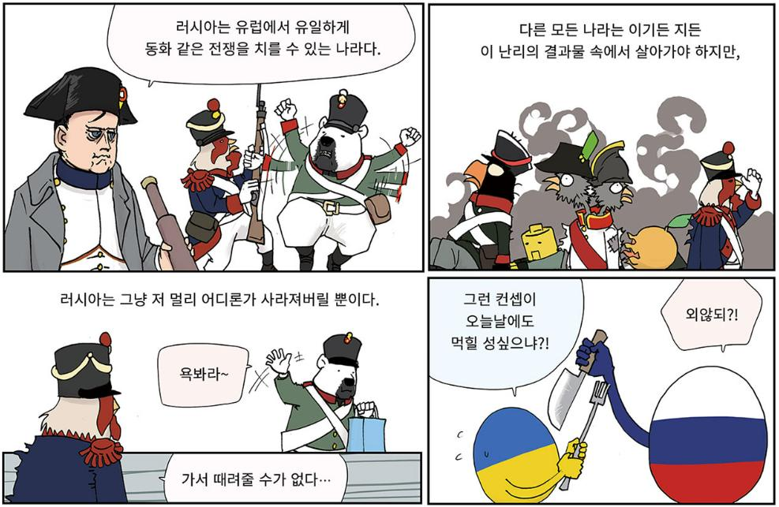
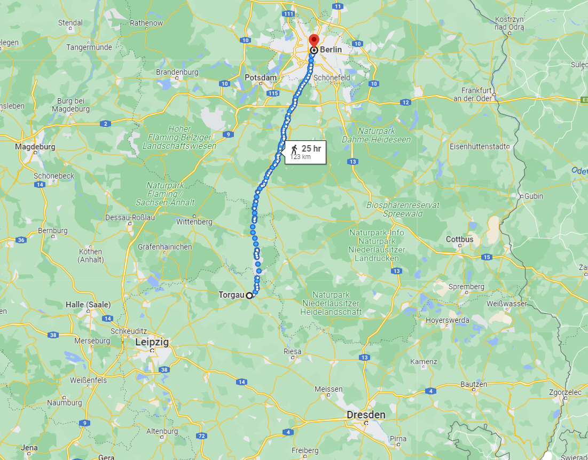

바우첸을 향하여 (1) - 나폴레옹의 꽃놀이패
게시: 2022-12-12T06:30:12+09:00
아무리 잘 싸운 뒤에 수행된 전략적 후퇴이고 아무리 추격자가 없다고 해도, 후퇴하는 군대의 사기가 드높다면 매우 이상한 일일 것입니다. 뤼첸 전투로부터 질서정연하게 후퇴하던 러시아-프로이센 연합군도 예외는 아니었습니다. 아니, 오히려 잘 싸운 뒤에 하는 후퇴라서 두 나라 군대는 더욱 혼란스러웠습니다. 그렇게 잘 싸웠는데 왜 후퇴를 하는 것이냐는 의문이 들 수 밖에 없었던 것입니다. 현실을 받아들이기 어려울 때 사람들은 보통 누군가 남탓을 하기 마련입니다. 보통은 사회의 소수 약자가 그런 비난의 대상이 되기 마련이었습니다. 가령 제1차 세계대전에서 패배한 독일은 유태인 탓을 했고 1812년 후퇴하던 러시아군에서는 러시아군 내의 발트 연안 독일계 장교들 탓을 했지요. 이 경우에는 비난 대상을 찾는 것이 아주 쉬웠습니다. 바로 동맹이라는 이름의 저 못 믿을 외국인들이었습니다. 러시아군은 프로이센군의 미숙함과 대책이 없는 과욕을, 프로이센군은 러시아군의 이기적인 소극적 행동을 비난했습니다. 특히 이제 어디로 후퇴하느냐에 대해서 양군의 입장은 첨예하게 갈렸습니다. 5월 3일 새벽, 후퇴해야 한다는 짜르의 말을 들은 프리드리히 빌헬름이 '이제 우리는 다시 메멜까지 후퇴하게 될 것'이라고 분노한 것에서도 알 수 있듯이, 프로이센은 이번 전쟁을 시작하면서부터 본질적인 두려움을 갖고 있었습니다. 바로 전쟁은 프로이센 코 앞에서 벌어지며, 단 한 번의 패배가 곧 수도 베를린의 함락으로 이어질 텐데 그럴 경우에도 러시아군은 1805년과 1807년에 그러했듯이 사태가 불리해지면 나 몰라라 도망쳐버릴 것이라는 두려움이었습니다.

(위 만화는 주간지 시사인에 연재되는 굽시니스트의 시사 만평입니다. 저 말은 나폴레옹이 1805년 아우스테를리츠 전투 직후, 동맹국 오스트리아를 버리고 저 혼자 살겠다고 나폴레옹과 단독 강화를 맺고는 물러가는 러시아군을 보면서 한 말입니다.) 모든 작전 계획에는 실패할 경우 어떻게 한다는 플랜 B가 있어야 합니다. 당연히 연합군도 뤼첸 전투에 돌입하기 전에, 만약 전투에서 질 경우 어떻게 한다는 것이 대략 결정되어 있었습니다. 그에 따르면 연합군은 일단 당연히 엘베 강을 건너 후퇴하게 되어 있었는데, 엘베 강을 건널 장소는 바로 드레스덴과 그 바로 북쪽 인근의 마이센(Meissen)이었습니다. 비트겐슈타인은 뤼첸 전투로부터 후퇴할 때 프로이센군은 마이센을 통해, 그리고 러시아군은 드레스덴을 통해 엘베 강을 건너도록 지시했습니다.
(마이센은 드레스덴에서 북서쪽으로 약 25km, 즉 걸어서 하루도 걸리지 않는 거리에 있는 소도시로 지금도 인구가 3만이 채 되지 않습니다. 당시 마이센에는 원래 다리가 없었는데, 연합군이 작센을 침공하면서 나폴레옹과의 대결을 앞두고 유사시를 대비하여 이 곳에 부교를 건설해 놓았습니다. 이 도시의 명물로는 15세기에 지어진 저 알브레히츠부르크 성이 유명합니다.) 연합군의 이러한 움직임은 나폴레옹도 포착하고 있었습니다. 나폴레옹은 뤼첸 전투에서 승리한 직후, 프로이센군은 절대 수도 베를린을 포기하지 못할 것이며 반대로 러시아군은 러시아 본국으로의 교통로인 괴를리츠-브레슬라우-칼리쉬 라인을 포기하지 못할 것이라고 생각하고 있었습니다. 그리고 그렇게 프로이센군과 러시아군이 남북으로 약간 떨어져 후퇴 중이라는 소식은 나폴레옹의 그런 판단에 확신을 주는 것이었습니다. 나폴레옹 전략의 핵심은 적보다 한발 빠른 기동력이었지만, 그보다 더 중요한 것이 언제나 '각개격파'였습니다. 생각해보면 나폴레옹이 거둔 모든 승리 뒤에는 적의 분열이 있었고, 그런 분열은 모두 나폴레옹이 만들어낸 것이었습니다. 가령 1805년 아우스테를리츠만 해도 그렇습니다. 겉보기엔 오스트리아와 러시아 굳게 뭉친 연합군을 나폴레옹이 압도적인 무력으로 격파한 것 같습니다만, 그 전에 나폴레옹은 영국령인 하노버를 미끼로 프로이센이 그 연합군에 동참하지 않도록 많은 노력을 기울였습니다. 그렇게 눈 앞의 이익에 눈이 멀었던 프로이센은 오스트리아와 러시아가 떨어져 나가자 바로 다음 해인 1806년 예나-아우어슈테트에서 박살이 났지요. 그 다음 해에는 홀로 남은 러시아를 프리틀란트 전투에서 패배시켰습니다. 나폴레옹이 1809년 바그람 전투에서 오스트리아를 꺾을 때 프로이센은 팔짱만 끼고 있었고 러시아는 오히려 서류상 나폴레옹의 동맹국이자 오스트리아의 적국이었습니다. 나폴레옹은 한번도 프로이센-오스트리아-러시아를 한꺼번에 상대한 적이 없었습니다. 그는 토끼를 잡을 때도 신중한 사자였고, 이제 그 사자는 토끼 떼의 분열을 노리고 있었습니다. 그리고 그 분열의 계기는 바로 베를린이라고 그는 보았습니다.
(BBC Earth의 다큐멘터리 'A Perfect Planet'의 한 장면입니다. 북극 토끼는 수백 마리가 뭉쳐서 지내는데, 이는 북극 늑대로부터의 보호를 위해서입니다. 어차피 수백 마리가 뭉쳐봐야 토끼일 뿐인데 늑대에게 상대가 되겠냐고요? 놀랍게도 저렇게 수백 마리가 한꺼번에 움직이며 도망치는 가운데 한 마리를 잡는 것이 의외로 어렵다고 합니다. 협공에 나선 여러 마리의 북극 늑대는 많은 경우 사냥에 실패하고, 어쩌다 성공한다고 해도 한 마리 밖에 못 잡는다고 하네요.) 실제로 뤼첸 전투 직전 뷜로(Friedrich Wilhelm Freiherr von Bülow)의 지휘 하에 잘러 강변의 할러(Halle)를 지키고 있던 약 7천에 달하는 프로이센 병력은 로리스통의 제5 군단에게 밀려난 뒤, 뤼첸 전투가 패배로 끝나자 연합군 본대와 함께 드레스덴-마이센 방면으로 이동하지 않고 북쪽으로 이동하여 데사우(Dessau)에서 엘베 강을 건넜습니다. 이는 베를린을 지키기 위해서였습니다. 나폴레옹은 프로이센의 약점 베를린을 제대로 활용하려 했습니다. 그는 뤼첸 전투에서 큰 타격을 입은 네의 제3 군단을 일단 라이프치히에 입성시킨 뒤, 당시 3천에 불과하여 사실상 작은 여단 규모였던 레이니에의 제7 군단은 물론, 빅토르의 제2 군단, 그리고 세바스티아니(Horace-François Sébastiani)의 제2 기병 군단 등 후방에서 이동해오고 있던 작은 규모의 군단들과 합세하도록 했습니다. 이렇게 병력을 보충한 네 지휘 하의 군단들을 나폴레옹은 '멋진 하나의 독립적 군'(une belle armée)이라고 칭하며 자신의 본대로부터 떨어져 북동쪽으로 진격하도록 했습니다. 그 행선지는 일단 엘베 강변에 위치한 토르가우 요새였습니다. 당시 연합군에 의해 포위된 토르가우는 작센군이 지키고 있었고 그 사령관인 틸만(Johann von Thielmann) 장군은 중립을 표명하고 있었지만, 프랑스군이 외곽에 도착하여 연합군의 포위를 풀면 언제든 프랑스군에 합류할 것이 분명했습니다.

(토르가우로부터 베를린은 약 120km, 즉 약 4일 간의 행군거리에 떨어져 있었고 그 사이에 아무런 장애물이 없었습니다.) 나폴레옹 본인은 13만5천의 주력군을 이끌고 러시아군을 추격하여 드레스덴으로 향하면서 네의 6만5천에게는 토르가우로 가게 한 것에는 2가지 목적이 있었습니다. 하나는 다들 짐작하시듯 마치 토르가우로부터 베를린으로 내달리는 듯 동작을 취하여 프로이센군의 애간장이 타도록 하는 것이었습니다. 이러면 수도를 지키고자 하는 프로이센군과 후방 교통로를 확보하고자 하는 러시아군은 분열될 것이라는 판단이었습니다. 다른 하나는 베를린으로 가는 척 하면서 드레스덴 후방을 치는 것이었습니다. 엘베 강은 잘러 강과는 차원이 다른 큰 강이었기 때문에 건널 수 있는 곳이 제한적이었고, 드레스덴은 엘베 강 양안에 걸쳐 남서쪽은 알트슈테트(Altstadt, 구시가지), 북동쪽은 노이슈타트(Neustadt, 신시가지)로 갈라진 도시였습니다. 만약 러시아군이 엘베 강을 건넌 뒤 노이슈타트에 방어선을 치고 엘베 강을 지킨다면 나폴레옹으로서는 엘베 강을 건너는 것이 곤란할 수도 있었습니다. 하지만 네가 상당한 규모의 병력을 이끌고 토르가우에서 강을 건너 드레스덴의 후방을 노린다면, 러시아군으로서는 퇴로가 끊어질 것을 염려하여 후퇴하지 않을 수 없었습니다. 이렇게 토르가우에 네를 보낸 것은 나폴레옹으로서는 꽃놀이패였습니다. 토르가우, 그리고 이어서 바로 그 하류에 있는 비슷한 요새인 비텐베르크를 점령하면 나폴레옹은 하나의 군대로 베를린과 드레스덴 두 도시를 위협할 수 있을 뿐만 아니라 러시아군과 프로이센군을 분리시킬 수도 있었습니다. 그러나 모든 것이 나폴레옹의 계산대로 움직이는 것은 아니었습니다. Source : The Life of Napoleon Bonaparte, by William Milligan Sloane Napoleon and the Struggle for Germany, by Leggiere, Michael V

https://www.youtube.com/watch?v=UQKC5pZ0FG8 https://www.sisain.co.kr/news/articleView.html?idxno=48022 https://en.wikipedia.org/wiki/Meissen